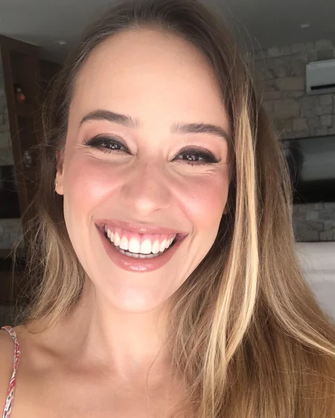
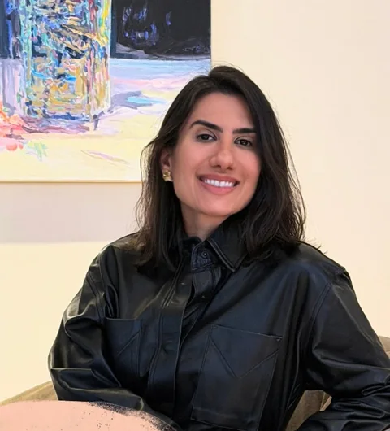

GOIÂNIA · NOVEMBRO 2026
Presença médica.
Cinco propostas independentes para dermatologia, cuidado com a pele e cirurgia plástica.

01 / Dermatologia
Dra. Alana Luísa
Dermatologia02 / Medicina · cuidados com a pele
Dra. Fernanda Bretas
Atendimento e tecnologia03 / Medicina · pele e cabelo
Dra. Priscilla Ramos
Pele e tricologia04 / Cirurgia plástica
Dr. Rodrigo Gomide
Cirurgia plástica
05 / Dermatologia